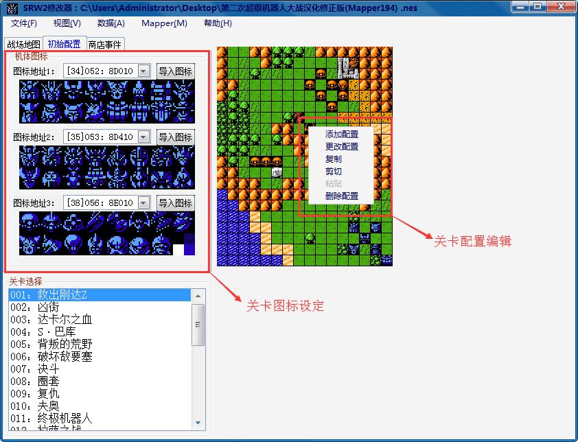
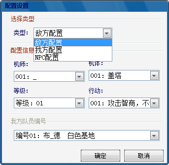
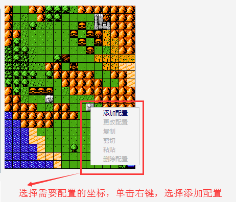
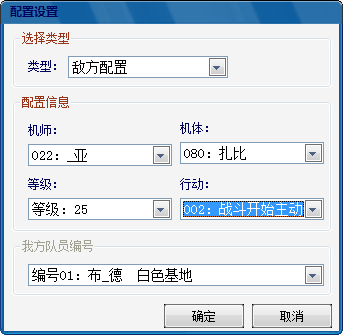
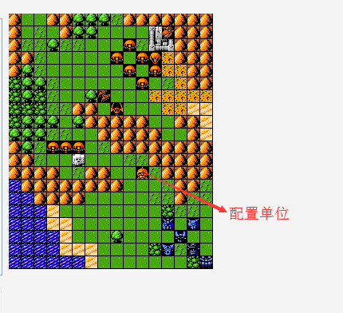
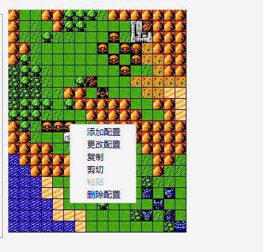
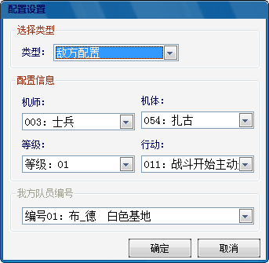

功能区域布局：

1.关卡图标设定：选择每关所需要设定的三个图标图库（图标设定请参考修改心得-修改难点示例-小图标的配置）。
2.关卡配置编辑：包括添加配置、更改配置、复制、剪切、粘贴、删除配置6个操作指令。
2.1添加配置：添加一个新的单位（需要注意的是战场上配置的数量为敌方18+我方11+NPC3），配置坐标为光标悬浮于地图模型上的坐标（切记各个配置之间不要重叠，否则会产生BUG）。可选择的类型为敌方、我方和NPC。当选择类型为敌方配置或者NPC配置时时，可编辑的信息为机师、机体、等级、行动（智商），当选择的类型为我方配置时，可编辑的内容是最后一个选择栏中的内容，编号+人物+机体，即已经编制入队的我方人物。通过选择栏选择需要的项进行配置。

例如现在我们需要配置一个有夏亚驾驶的25级的沙扎比。首先在地图上选择需要配置的坐标，单击右键，选择添加配置，弹出配置框。

之后我们选择所需要配置的信息，4项全部完成之后选择确定，配置框自动消失。

此时地图上就会显示我们所添加的配置，可以通过鼠标单击左键拖动其放置到我们所需要的任意位置（地图范围之内）。需要注意的是图标问题，所选择的机体的图标尽量属于之前所设定的三个图标图库之中，否则会出现图标无法对应的情况，如下图所示，配置的沙扎比的图标不在所设定的三个图库之中，就会出现图标错误的情况，所以对于图标的设定我们需要在一开始进行全局设定。

2.2更改配置：鼠标悬浮于需要更改的机体之上，单击右键，选择更改配置，弹出配置框。对于敌方配置而言我们能更改的为4个选择，机师’机体、等级和行动，更改完毕之后选择确定即可。如果要想更改机体的坐标，鼠标悬浮于图标之上，左键进行拖动即可。NPC的配置同理。我方配置一般而言不进行更改，在一开始配置所需要出战的机体即可。
 
2.3复制：鼠标悬浮于需要复制的机体 图标上，右键选择复制，在需要的坐标处选择粘贴即可。
2.4删除配置：鼠标悬浮于需要操作的机体图标上，右键选择删除配置即可。